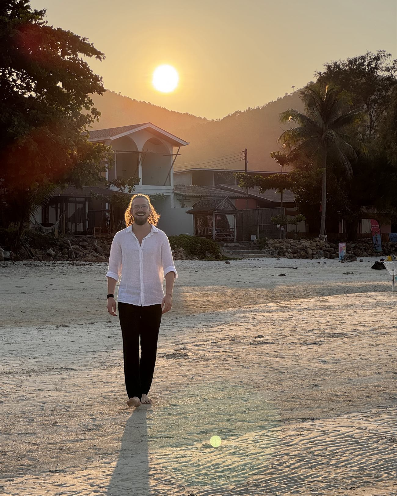

01
Anfang: Boden bauen
Wir schauen uns an, wie dein System heute funktioniert — wo es dicht macht, wo es überschießt, was es schützt. Erst wenn du dich sicher fühlst, gehen wir tiefer. Alles andere hält nicht.
Die ersten Wochen
Die Einzelbegleitung ist für Menschen, die nicht an einem Thema arbeiten wollen, sondern an ihrem Verhältnis zu sich selbst. Sie hat keine feste Länge und kein Paket-Etikett — wir bauen den Rahmen, wenn wir wissen, worum es bei dir geht.

Ich arbeite nicht in Wochen 1 bis 8. Ich arbeite mit dem, was da ist — in einer Struktur, die trägt, wenn gerade nichts trägt.
Wir schauen uns an, wie dein System heute funktioniert — wo es dicht macht, wo es überschießt, was es schützt. Erst wenn du dich sicher fühlst, gehen wir tiefer. Alles andere hält nicht.
Hier passiert die eigentliche Arbeit. Wir gehen an die Stellen, um die du bisher herumgelaufen bist — mit Körperarbeit, mit Gesprächen, mit dem, was zwischen den Terminen im Alltag hochkommt. Das ist der Abschnitt, in dem es sich manchmal schlechter anfühlt, bevor es besser wird. Deshalb bin ich dabei.
Das Ziel ist nicht, dass du bei mir bleibst. Das Ziel ist, dass du merkst, wann etwas in dir eng wird — und weißt, was du dann tust. Wir schließen bewusst ab, statt auszuschleichen.
Erfahrungsgemäß landen wir bei mehreren Monaten. Wie viele und in welchem Abstand wir uns sehen, legen wir gemeinsam fest — nicht vorab und nicht nach Paketgröße.
Online von überall. Vor Ort in München und Regensburg, und wenn ich unterwegs bin, finden wir eine Lösung — die meisten Begleitungen laufen ohnehin gemischt.
Die klären wir im Kennenlern-Call, sobald klar ist, was du brauchst. Ich nenne dir eine Zahl, keine Preisliste — und du entscheidest in Ruhe danach.
Coaching und Neo Emotional Release sind Prozess- und Persönlichkeitsarbeit und ersetzen weder Psychotherapie noch ärztliche Behandlung. In akuten Krisen: Notruf 112 · Telefonseelsorge 0800 111 0 111 · Krisendienst Bayern 0800 655 3000.
Wir telefonieren, danach machen wir eine erste Session zusammen. Über eine längere Begleitung reden wir erst, wenn du weißt, wie sich meine Arbeit anfühlt.
Kennenlern-Call anfragen